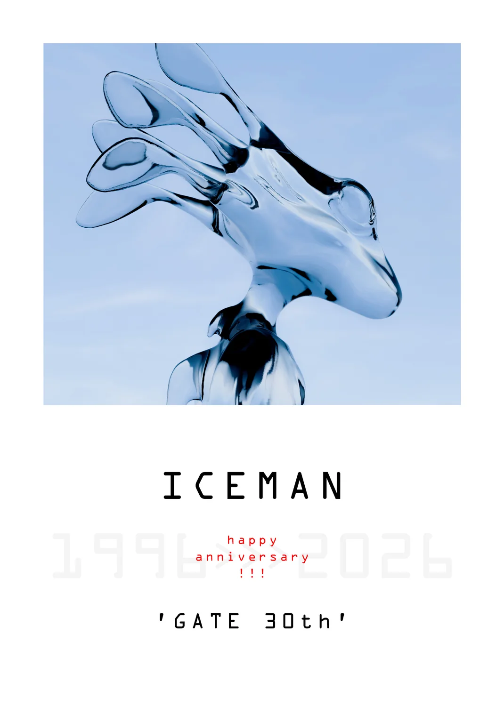

Iceman happy anniversary
19962026
Iceman デビュー30周年記念ファンブック21人の寄稿を、原画の解像度で
パスワードを受け取った方だけが読めます。一度開くと、この端末では次から入力なしで開きます。
OPEN で音が出ます。読みながら切り替えられます。
GATE 30th
1/ –
ピンチ・ホイールで拡大 / ダブルタップで切替
各サービスの検索結果が開きます